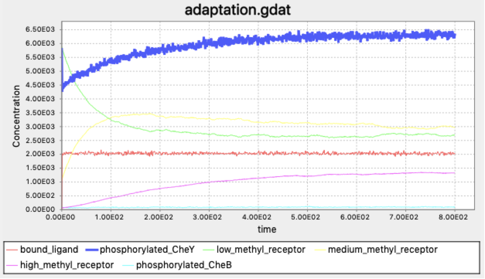
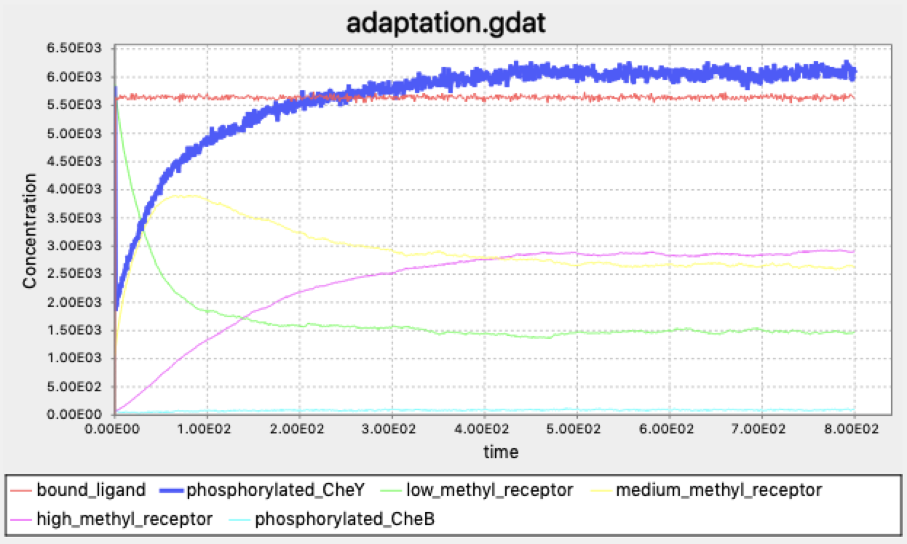

Methylation Helps Bacteria Adapt to Differing Concentrations
Bacterial tumbling frequencies remain constant despite background attractant concentrations
In the previous lesson, we explored the signal transduction pathway by which E. coli can change its tumbling frequency in response to a change in the concentration of an attractant. But the reality of cellular environments is that the concentration of a substance in these environments can vary across several orders of magnitude. The cell therefore needs to detect not absolute concentrations of a substance but rather relative changes so that it can move in the direction of an attractant (or away from a repellent).
STOP: Consider two bacterial cells, both of which are in well-mixed environments with fixed glucose concentrations. The first cell’s environment has a glucose concentration of x, and the second cell’s environment has a glucose concentration of 0.1x. Should the default tumbling frequency of the two cells be the same? What if we drop a sugar cube into both environments? Should the two cells respond in the same way or in different ways in response to the attractant?
The ability of E. coli to react to relative changes in its environment is not present in our current model of chemotaxis. According to our current model, if a cell is in an environment with high background concentration of an attractant, then the cell will detect a signal and lower its tumbling frequency. If the concentration continues to increase, then it may not be able to lower this frequency any further.
E. coli detects relative changes in its concentration via adaptation to the signal concentration. If the concentration of attractant remains constant for a period of time, then regardless of the absolute value of the concentration, the cell returns to the same background tumbling frequency. In other words, E. coli demonstrates robustness to the background concentration of attractant in maintaining its default tumbling behavior.
In this lesson, we will investigate the biochemical mechanism that E. coli uses to achieve such a robust response to environments with different background concentrations. We will then further expand the model we built in the previous lesson to see if this model can replicate the bacterium’s adaptive response.
Bacteria have a “memory” of past concentrations using methylation
Recall from the previous lesson that in the absence of an attractant, CheW and CheA readily bind to an MCP, leading to greater autophosphorylation of CheA, which in turn phosphorylates CheY. The greater the concentration of phosphorylated CheY, the more frequently the bacterium tumbles.
Signal transduction is achieved through phosphorylation, but E. coli maintains a “memory” of past environmental concentrations through a chemical process called methylation. In this reaction, a methyl group (-CH3) is added to an organic molecule; the removal of a methyl group is called demethylation.
Every MCP receptor contains four methylation sites, meaning that between zero and four methyl groups can be added to the receptor. On the plasma membrane, many MCPs, CheW, and CheA molecules form an array structure. Methylation reduces the negative charge on the receptors, stabilizing the array and facilitating CheA autophosphorylation. The more sites that are methylated, the higher the autophosphorylation rate of CheA, which means that CheY has a higher phosphorylation rate, and tumbling frequency increases.
We now have two different ways that tumbling frequency can be elevated. First, if the concentration of an attractant is low, then CheW and CheA freely form a complex with the MCP, and the phosphorylation cascade passes phosphoryl groups to CheY, which interacts with the flagella and keeps tumbling frequency high. Second, an increase in MCP methylation can also boost CheA autophosphorylation and lead to an increased tumbling frequency.
Methylation of MCPs is achieved by an additional protein called CheR. When bound to MCPs, CheR methylates ligand-bound MCPs faster12, and so the rate of MCP methylation by CheR is higher if the MCP is bound to a ligand.3. Therefore, say that E. coli encounters an increase in attractant concentration. Then the lack of a phosphorylation cascade will mean that there is less phosphorylated CheY, and so the tumbling frequency will decrease. However, if the attractant concentration levels off, then the tumbling frequency will flatten, while CheR starts methylating the MCP. Over time, the rising methylation will increase CheA autophosphorylation, bringing back the phosphorylation cascade and raising tumbling frequency back to default levels.
Just as the phosphorylation of CheY can be reversed, MCP methylation can be undone as well to prevent methylation from being permanent. In particular, an enzyme called CheB, which like CheY is phosphorylated by CheA, demethylates MCPs (as well as autodephosphorylates). The rate of an MCP’s demethylation is dependent on the extent to which the MCP is methylated. In other words, the rate of MCP methylation is higher when the MCP is in a low methylation state, and the rate of demethylation is faster when the MCP is in a high methylation state.3
The figure below adds CheR and CheB to provide a complete picture of the core pathways influencing chemotaxis. To model these pathways, we will need to add quite a few molecules and reactions to our current model.
 The chemotaxis signal-transduction pathway with methylation included. CheA phosphorylates CheB, which methylates MCPs while CheR demethylates MCPs. Blue lines denote phosphorylation, grey lines denote dephosphorylation, and the green arrow denotes methylation. Image modified from Parkinson Lab’s illustrations.
The chemotaxis signal-transduction pathway with methylation included. CheA phosphorylates CheB, which methylates MCPs while CheR demethylates MCPs. Blue lines denote phosphorylation, grey lines denote dephosphorylation, and the green arrow denotes methylation. Image modified from Parkinson Lab’s illustrations.
Combinatorial explosion and the need for rule-based modeling
Our goal is to expand the BioNetGen model that we built in the previous lesson, and then see if this model can replicate the adaptation behavior of E. coli in the presence of a changing attractant concentration. Before incorporating the adaptation mechanisms in our BNG model, we will first describe the reactions that BioNetGen will need.
We begin with considering the MCP complexes. In the phosphorylation tutorial, we identified two components relevant for reactions involving MCPs: a ligand-binding component l and a phosphorylation component Phos. The adaptation mechanism introduces two additional reactions: methylation of the MCP by CheR, and demethylation of the MCP by CheB.
We also need to include binding and dissociation reactions between the MCP and CheR because under normal conditions, most CheR are bound to MCP complexes.4 We will therefore introduce two additional components to the MCP molecules in addition to their phosphorylation components: r (denoting CheR-binding) and Meth (denoting methylation states). In our simulation, we will use three methylation levels (low, medium, and high) because these three states are most involved in the chemotaxis response to attractants.5
Imagine for a moment that we were attempting to specify every reaction that could take place in our model. To specify an MCP, we would need to tell the program whether it is bound to a ligand (two possible states), whether it is bound to CheR (two possible states), whether it is phosphorylated (two possible states), and which methylation state it is in (three possible states). Therefore, a given MCP has 2 · 2 · 2 · 3 = 24 total states.
Say that we are simulating the simple reaction of a ligand binding to an MCP, which we originally wrote as T + L → TL. We now need this reaction to include 12 of the 24 states, which are those corresponding to the MCP being unbound to the ligand. Our simple reaction would become 12 different reactions, one for each possible unbound state of the complex molecule T. And if the situation were just a little more complex, with the ligand molecule L having n possible states, then we would have 12n reactions. Imagine trying to debug a model in which we had accidentally incorporated a typo when transcribing just one of these reactions!
In other words, as our model grows, with multiple different states for each molecule involved in each reaction, the number of reactions we need to represent the system grows very fast; this phenomenon is called combinatorial explosion. Our model of chemotaxis is ultimately relatively straightforward, but combinatorial explosion means that building realistic models of biochemical systems at scale without a simplifying language can be daunting if not impossible.
A major benefit of using a rule-based modeling language provided by BioNetGen is that it circumvents combinatorial explosion by consolidating many reactions into a single rule. For example, when modeling ligand-MCP binding, we can summarize the 12 different reactions with the rule “a free ligand molecule binds to an MCP that is not bound to a ligand molecule.” In the BioNetGen language, this rule is represented by the same one-line expression as it was in the previous lesson:
LigandReceptor: L(t) + T(l) <-> L(t!1).T(l!1) k_lr_bind, k_lr_dis
Why is one rule enough? Recall from our discussion of the Gillespie algorithm that the wait time before the next reaction to be sampled depends only on the rate of all relevant reactions in the system. In this particular case, the rate of ligand-MCP binding depends on the total concentration of free ligands and unbound MCPs, but it does not depend on the state that an MCP is in.
In the following tutorial, we will expand our BioNetGen model from the previous tutorial into one that can incorporate CheR binding as well as MCP methylation while avoiding combinatorial explosion. We will then examine whether this model allows us to learn anything about how a bacterium can adapt to changes in the relative concentration of attractant.
Bacterial tumbling is resilient to large sudden changes in ligand concentration
In the figures below, we show plots of the concentration of each molecule of interest in our system for a few different cases. In each case, we suddenly change the concentration of the attractant ligand (l0) and examine how this affects the concentration of phosphorylated CheY (the molecule whose phosphorylation is directly correlated with increased tumbling frequency). The attractant concentration will then level off; because the relative concentration is not changing, will our model reflect the hypothesis that E. coli can return to approximately the same steady-state concentration of phosphorylated CheY regardless of the concentration of the ligand?
Below, we show simulation results for some different concentrations of ligand molecules added at the beginning of the simulation. First we add a relatively small amount, setting l0 equal to 10,000. The system returns so quickly to an equilibrium in phosphorylated CheY that it is difficult to think that the attractant has had any effect on tumbling frequency. (Note: time is shown in seconds on the x-axis in the following figures.)

If instead l0 is equal to 100,000, we obtain the figure below. After a drop in the concentration of phosphorylated CheY, the system returns to equilibrium after a few minutes.

When we increase l0 by another factor of ten to 1 million, the initial drop is more pronounced, but the system is able to just as quickly return to equilibrium. Note how much higher the concentration of methylated receptors are in this figure compared to the previous figure; however, there are still a significant concentration of receptors with low methylation, indicating that the system may be able to handle a yet bigger jolt.

When we set l0 equal to 10 million, we give the system this bigger jolt. Once again, the model is resilient to this change in the concentration of the ligand after a few minutes.

Finally, with l0 equal to 100 million, we see what we might expect: the steepest drop in phosphorylated CheY yet, but a system that is able to return to equilibrium.

Our model therefore has provided compelling evidence that the E. coli chemotaxis system is very robust to changes in its environment. The simulated bacterium can make a very rapid change in response to a sudden change in its environment, but even if this change is significant, the system will return to its default state. This robustness in our simulation has been observed in real bacteria67, as well as replicated by other computational simulations8.
Aren’t bacteria magnificent?
However, our work is not done. We have simulated how a bacterium can adapt to a single sudden change in its environment, but life is about responding to changes all the time. So in the next lesson, we will further examine how our simulated E. coli responds in an environment in which the ligand concentration is changing constantly.
Additional resources
Some resources/reads if you are interested in the chemotaxis biology:
- Amazing introduction to chemotaxis: Parkinson Lab website.
- A good overview: by Webre et al. published in 2003. Available online
- Details on chemotaxis pathway and MCPs: review article by Baker et al. published in 2005 Available online.
- Details on MCPs: more recent review by Parkinson et al. published in 2015. Available online.
- Modeling robustness and integral feedback: lecture note by Berg in 2008. Available online.
-
Amin DN, Hazelbauer GL. 2010. Chemoreceptors in signaling complexes: shifted conformation and asymmetric coupling. Available online ↩
-
Terwilliger TC, Wang JY, Koshland DE. 1986. Kinetics of Receptor Modification - the multiply methlated aspartate receptors involved in bacterial chemotaxis. The Journal of Biolobical Chemistry. Available online ↩
-
Spiro PA, Parkinson JS, and Othmer H. 1997. A model of excitation and adaptation in bacterial chemotaxis. Biochemistry 94:7263-7268. Available online. ↩ ↩2
-
Lupas A., and Stock J. 1989. Phosphorylation of an N-terminal regulatory domain activates the CheB methylesterase in bacterial chemotaxis. J Bio Chem 264(29):17337-42. Available online ↩
-
Boyd A., and Simon MI. 1980. Multiple electrophoretic forms of methyl-accepting chemotaxis proteins generated by stimulus-elicited methylation in Escherichia coli. Journal of Bacteriology 143(2):809-815. Available online ↩
-
Shimizu TS, Delalez N, Pichler K, and Berg HC. 2005. Monitoring bacterial chemotaxis by using bioluminescence resonance energy transfer: absence of feedback from the flagellar motors. PNAS. Available online ↩
-
Krembel A., Colin R., Sourijik V. 2015. Importance of multiple methylation sites in Escherichia coli chemotaxis. Available online ↩
-
Bray D, Bourret RB, Simon MI. 1993. Computer simulation of phosphorylation cascade controlling bacterial chemotaxis. Molecular Biology of the Cell. Available online ↩